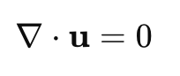

이번학기에 처음 듣게된
Numerical Heat transfer and fluid flow
수업.

위 책으로 수업을 진행하였고, computational fluid dynamics에서는
bible로 여겨지는 굉장히 오래된 책이다.
[Prerequisite]
공학수학, 열전달, 유체역학, 열역학, 고체역학
(위 내용을 학부시절 수강하고, 대학원에 들어가서야 들을 있는 과목이다)
(지금까지 들었던 과목들 중에서 가장 충격을 먹은 수업내용.
이러한 이론을 1960-70년대에 이미 생각을 했다는게 정말 놀랍다....)
(AI이전에 인간이 만들어낸 가장 강력한 도구라는 생각이 든다)
Q 저 책안에 있는 지식의 목적이 무엇인가?
인간은 물리법칙을 만들고, 그 물리법칙을 수학식으로 표현하였다.
그리고 그 수학식을 만족하는 '해'를 아는 것이 우리의 최종 목적이다.
예를들어, 방에 설치된 에어컨이 있다고 가정하자.

저 에어컨을 켜게 되면, 방 전체가 시원해질 것이다.
하지만 거실에 설치되어 있어, 방안에는 덜 시원해지는 경험을
한적이 있을 것이다.

거실에 설치된 에어컨
그렇다면 거실의 어디에 에어컨을 설치하면?
침실이 가장 시원해질까? 라는 의문을 가질 수 있다.
집 안 공기의 온도를 모든 위치,시간에 따라서 알 수 있다면,
위 질문의 답을 찾을 수 있다.
답을 찾는 방법은 총 3가지이다.
1. 실험으로 해 구하기.
2. 이론식 해 구하기.
3. computatinal 분석 -> 해 구하기.
1. 실험으로 해 구하기.
위의 집을 진짜 크기로 만들어서 실제 에어컨의 위치를 바꿔가며,
침실에서 온도계로 온도를 재면 답을 얻을 수 있다.
즉 가장 realistic하다.
하지만, 실제 집을 만드는 일은 scale이 너무 크다.
실험을 위해 집을 직접 만드는 것은 (expensive)
따라서, 보통 scale을 축소시키고 실험후,
결과값을 extrapolation하는 경우도 존재한다.
but still not free from error.
2. 이론식 해 구하기.
온도를 구하는 식은 다음 3가지 방정식이 해를 구하면 된다.


continuity eq
Naver's Stokes eq - linear momentum balance eq

Energy balance Eq.
위 3가지 식을 수학적으로 해를 구하는 것은
'불가능'하다.
즉, 굉장히 간단하고 간결한 문제들만
수학적으로 직접해를 구할 수 있다.
(우리가 예시로 든 문제는 풀수 없음)
예를들어, 1D heat conduction
x방향으로 heat flux가 존재할때, 온도가 어떻게 변하는지는
우리가 직접 해를 구할 수 있다.


boundary conditions
(열전달 시간에 해를 구하는 법을 다루었다 -> 카테코리(열전달, 1차 열 전도)
separation variable 방법을 사용하여 해를 구하면 다음과 같다.

즉, 시공간에 따라서 온도가 어떻게 바뀌는 지를 알 수 있다.
다시 우리가 풀던 문제는, 아무튼 직접 해를 구할 수 없다.
3. computatinal 분석 -> 해 구하기.
마지막 방식이 결국 우리가 유일이 할 수 있는 방식이다.
뒤에서 자세하게 설명하겠지만,
우리가 풀어야 하는 방정식들을 컴퓨터가 풀 수 있게
'변형' 시킨후,
컴퓨터의 굉장히 빠르고 많은 연산을 통해서, 해를 구한다.
continuity eq
Naver's Stokes eq - linear momentum balance eq
Energy balance Eq.
there are lots of 장점
low cost
- 직접 방을 만들 필요가 없고, compuational aid drawing작업으로
방을 만들어 주면 된다.
Way Faster
- 물론 직접 수학식을 풀어 해를 구하는 것이 가장 빠르겠지만,
해를 구할 수 없는 경우 컴퓨터 연산을 통해서 실험보다 빠르게 값을 도출 할 수 있다.
Complete information
가장 핵심적인 것은 위의 방정식을 풀면, 온도, 압력, 속도 등등 모든 값들을
전부 알 수 있다.
(실험의 경우 온도계로 온도를 측정할 수 는 있어도, 그 정보를 가지고
속도 압력을 알수 는 없다.)
Arbitary Simulation setting
우리가 환경을 임의로 자유롭게 설정이 가능하다.
(방에 사람이 몇명있는지, 겨울인지 여름인지 등등
모든 세팅을 컴퓨터에서 조작하기만 하면 되기 때문에
ideal case, real case, assumed case 모두 결과값을
얻을 수 있다.
however, disadvantages still present.
그럼에도 computational 연산 자체에 error가 존재한다.
뿐만아니라, 추후에 설명을 하겠지만,
우리가 풀어야 하는 편미분 방정식을
컴퓨터가 연산할 수 있는 algebra eq으로 변환 시켰기 때문에,
이 과정에서도 에러가 발생한다.
결론적으로,
이 책에서는 마지막에 언급하였던, 3번째 방식
컴퓨터를 이용하여 우리가 원하는 해를 방정식으로부터
얻는 방법에 대해서 알려주는 책이다.
우리가 지금까지 배웠던
mass, linear momentum angular momentum,
energy balance
식들을 유도하면 결국,
Partial differential equation과
boundary condition이 나오게 되고,
continuity eq - mass balance
Naver's Stokes eq - linear momentum balance eq
Energy balance Eq.
이를 algebra eq으로 전환시켜 주어,
컴퓨터에서 연산을 진행한다.
정말 이 방식이 위대한 것은, 해를 구하게 되면
내 방의 모든 위치 모든 시간에 대해서
공기의 온도
, 속도, 압력 등등을
전부 도출 할 수 있다.
(사실 위의 방의 온도를 구하는 문제는 간단한 문제였다 하하)
실제로 항공, 자동차, 선박 등등 다양한 문제에 쓰이고 있고,
아래의 사진은 비행기 날개 뒤에 공기의 흐름(공기의 속도 압력)을 계산한 결과이다.

즉, 우리는 비행기 날개에 가해지는 압력 -> 힘을
계산할 수가 있는 것이다.
(정말 위대하고도 대단한 인간이 만든 tool이다)
(AI이전에 가장 위대한 tool이라고 생각을 한다)
딱, 여기까지만 이야기하고 이제 어떻게 정확히 해를 도출하는지를
책을 통해 정확히 이해해보자.